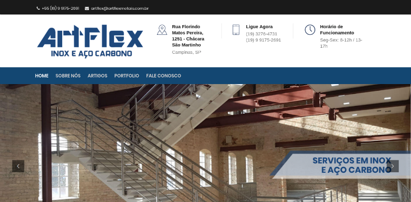

William Kennedy, solteiro, anos. Goiano residente na capital de São Paulo. Bonito, inteligente e modesto.
Começou sua carreira profissional ao fim de seus 14 anos, pretendia ser designer na época. Após certo tempo trabalhando em algumas empresas como aprendiz, viu que a área gráfica não era sua praia e aos poucos foi se interessando mais pela WEB.
Passou a trabalhar como desenvolvedor web quando começou a estudar PHP e MySQL, mas logo após algumas experiências, começou a se focar mais no desenvolvimento front-end.
Após alguns anos trabalhando como desenvolvedor front, foi se aprofundando cada vez mais no desenvolvimento com JavaScript e seus zilhões de frameworks. Ao conhecer o Node.js e o Express.js, foi entrando mais no desenvolvimento de back-end e hoje trabalha como fullstack javascript, desenvolvendo com tecnologias MEAN (atualmente se aventurando com apps híbridos em Ionic).
Curriculum Vitae: Visualizar
Get in touch
Pode entrar em contato comigo! Não mordo (tá, quem sabe um pouco)!
Dra. Andressa Amorim
Desenvolvimento Full Stack.
Desenvolvimento utilizando a plataforma do WordPress. Website simples, com contato, mapa e dados institucionais da empresa. Houve tratamento de imagens e personalização do CSS base. Veja o site online
Tecnologias utilizadas: WordPress | CSS3 | SEO | Adobe Photoshop | Google API
Data: Dezembro de 2018
Cliente: Dra. Andressa Amorim
Categoria: Website em WordPress
Dra. Maysa Rodolfo
Desenvolvimento Full Stack.
Desenvolvimento utilizando a plataforma do WordPress. Website simples, com contato, mapa e dados institucionais da empresa. Houve tratamento de imagens e personalização do CSS base. Veja o site online
Tecnologias utilizadas: WordPress | CSS3 | SEO | Adobe Photoshop | Google API
Data: Março de 2019
Cliente: Dra. Maysa Rodolfo
Categoria: Website em WordPress
Artflex
Desenvolvimento Full Stack.

Desenvolvimento utilizando a plataforma do WordPress. Website simples, com contato, mapa e dados institucionais da empresa. Houve tratamento de imagens e personalização do CSS base. Veja o site online
Tecnologias utilizadas: WordPress | CSS3 | SEO | Adobe Photoshop | Google API
Data: Outubro de 2018
Cliente: Artflex
Categoria: Website em WordPress
RoutEasy
Desenvolvimento Full Stack.
Tudo iniciou com o desenvolvimento do front-end do sistema e da landing page. Hoje atuo no desenvolvimento full stack da plataforma. O RoutEasy é um sistema de roteirização para empresas de logística. Veja o site online
Rede social para usuários de sistemas de marketing multinível, contando com mais de 100 mil usuários cadastrados.
A rede social foi desenvolvida no esquema desktop first. Foi meu primeiro trabalho responsivo. Quando comecei, não sabia nem o que eram media-queries e este desafio foi o início de um grande aprendizado, que faria com que minhas skills melhorassem cada vez mais.
A ideia primordial era manter a mesma identidade visual nos três sites do grupo, que podem ser vistos online nos links abaixo: Umbria Group | Umbria Consulting | Umbria Private
A demanda era de um site com notícias, informações sobre parceiros e toda a cobertura do evento realizado em Sorocaba-SP.
Os formulários eram para credenciamento de visitantes no evento e também havia o cadastro de imprensa. Ambos deveriam ser interligados com um sistema de credenciamento.
O prazo para tudo era curto, o WordPress caiu como uma luva.
Tecnologias utilizadas: WordPress | PHP | HTML | CSS | jQuery | MySQL
Data: Maio de 2012
Cliente: HL4 Ambiental
Categoria: WordPress
500 Melhores
Portal de notícias e ranking de estabelecimentos comerciais.
O 500 Melhores consistia em formar rankings dos melhores estabelecimentos das capitais brasileiras, elegidos pelo público.
Além de tudo também era um portal de notícias, com notícias dentro das categorias Comer e Beber, Saúde e Beleza, Franquias e Negócios e Cultura e Lazer.
Site/blog para o Shisei Dojo, dojo brasileiro da escola Bujinkan de Ninjutsu.
Site desenvolvido inteiramente em WordPress. O objetivo do site é mostrar ao público o que é o ninjutsu e as vantagens de praticar esta arte milenar. No site é possível encontrar fotos e vídeos de praticantes da arte marcial em questão, entrar em contato, obter a localização e aprender mais sobre a cultura japonesa. Veja o site online
Tecnologias utilizadas: WordPress
Data: 2012
Cliente: Yotta Seven Comunicação
Categoria: WordPress
YUI Brasil
Fã-site dedicado a cantora japonesa Yoshioka YUI.
A demanda era um blog para que os administradores do fã-clube pudessem publicar novidades, fotos, releases, vídeos e tudo relacionado a cantora.
Tecnologias utilizadas: WordPress
Data: 2012
Cliente: Yotta Seven Comunicação
Categoria: WordPress
Fernanda Motta
One page website desenvolvido para a modelo internacional Fernanda Motta.
One page website desenvolvido no formato desktop-first, com utilização de API's do Facebook, Twitter e Instagram. Veja o site online (Obs: projeto entregue como o esperado, a forma na qual o site se encontra atualmente é de responsabilidade de quem o está mantendo hoje).
Tecnologias utilizadas: HTML5 | CSS3 | jQuery
Data: Junho de 2014
Cliente: SAFARI Digital Media Production
Categoria: One Page
Consignado BB Dotz
Manutenção realizada utilizando SASS/Compass.
Meu trabalho neste projeto consiste na página ilustrada na imagem acima e em alguma pequenas alterações em todo o site.
O desafio aqui foi utilizar o pré-processador, que até então eu nunca havia trabalhado. O aprendizado houve de ser veloz, pelo curto prazo que havia para as alterações solicitadas. Veja o site online
A demanda era ajustar imagens, textos, alterar a disposição de alguns elementos na home do site e remover itens desnecessários. Veja o site online
Tecnologias utilizadas: HTML5 | CSS3 | jQuery
Data: Julho de 2014
Cliente: SAFARI Digital Media Production
Categoria: Manutenção
Ecofuturo
Linha do tempo responsiva.
Desenvolvimento da linha do tempo por completo, no esquema desktop-first. Veja o site online
Tecnologias utilizadas: HTML5 | CSS3 | jQuery
Data: Maio de 2014
Cliente: SAFARI Digital Media Production
Categoria: Responsive Design
Curriculum Vitae
William Kennedy
Solteiro, brasileiro, anos.
São Paulo - SP
Telefone residencial: (11) 9.8117.7713
E-mail: will.lindemann@gmail.com
Objetivo
Trabalhar com desenvolvimento full-stack javascript.
Resumo Profissional
Desenvolvimento de sites com HTML5, CSS3, JavaScript (Node.js, Express.js, AngularJS)
Desenvolvimento de sites e blogs com WordPress
Soluções em Search Engine Optimization e Search Engine Marketing
Desenvolvimento responsivo e crossbrowser.
Conhecimentos
JavaScript: Node.js, Express.js, AngularJS 1.x, Ionic Framework
MongoDB e MySQL
HTML5, CSS3, GIT, WordPress, Adobe Photoshop, Linux (Ubuntu/shell), Bootstrap, Responsive Design, Amazon AWS, SEO e social media.
Histórico Profissional
RoutEasy - Acessoria Logística (09/2015 - atualmente) – Desenvolvedor FullStack Atividades desenvolvidas: Desenvolvimento de site e sistema, utilizando: HTML5, CSS3, SASS, Node.js, Express.js, AngularJS, Ionic, MongoDB, GIT, Grunt e AWS.
Yotta Seven Comunicação (12/2010 à 12/2016) – Sócio-fundador Atividades desenvolvidas: Desenvolvimento de sites utilizando PHP, WordPress, HTML, CSS(3), Javascript (jQuery e jQuery UI), Smarty Framework, MySQL e API's do Twitter e Facebook. Gerenciamento de promoções e campanhas no Facebook e Twitter. Otimização de sites para os mecanismos de busca.
Safari Produtora de Mídia – Desenvolvedor Front End Atividades desenvolvidas: Desenvolvimento de websites onepage, responsivos, com utilização de APIs do Facebook, Twitter e Instagram.
SDR Produçoes Artisticas (atual Gold Produções) – Desenvolvedor PHP e Front-end Atividades desenvolvidas: Desenvolvimento utilizando PHP, Laravel Framework, Bootstrap, HTML5, Layout Responsivo (web mobile) e GIT.
Grupo HL4 Ambiental – Desenvolvedor PHP Atividades desenvolvidas: Desenvolvimento de sites em Wordpress. Sistema de gerenciamento de eventos, desenvolvimento de banners (Adobe Illustrator e Photoshop).
Editora Nova Brasil – Analista SEO e Web Designer Atividades desenvolvidas: Monitoramento de campanha em redes sociais e SEO, criação de flyers, banners em Flash e implementação de complementos para o site.
Inove Publicações e Participações – Web Designer Atividades desenvolvidas: Criação do site da empresa, logotipo, banners, flyers e capas de revista. Utilizando programas como Photoshop, Illustrator, InDesign, Dreamweaver, MySQL Front, e fazendo manutenção na rede de computadores.
Formação Acadêmica
Curso Superior em Tecnologia de Análise e Desenvolvimento de Sistemas (FIT – Faculdade Impacta de Tecnologia) – Trancado.
Cursos e Workshops
Certificado pela MestreSEO para trabalho com Search Engine Optimization em curso com carga horária de 16 horas realizado em 2010.
Workshop de serviços da Amazon AWS, oferecidos pela Amazon na AWS Summit Brazil 2013.
Treinamento de GIT pela CodeSchool.
Introdução a AngularJS pelo Tuts+ Premium.
Gosto de tudo que é novo. A área de TI foi a minha opção de carreira pois o campo de trabalho é movido à base da inovação, e é algo que está se expandindo cada dia mais.
Possuo facilidade no aprendizado e um senso crítico com base nas tendências globais em tecnologia.
"Uma mente que se abre a novas ideias, jamais retorna ao seu tamanho original" – Albert Einstein